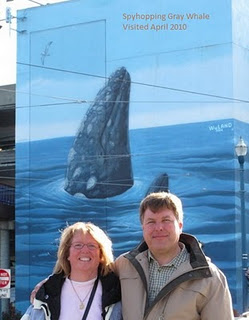

We have enjoyed Wyland’s work for many years and had seen some of his walls while traveling. One day while at Pier 39 in San Francisco we were looking at one of these walls and thinking how fun it would be to get our picture in front of some of them.
With this simple first picture started what I’m sure will be a long term journey to search for these walls.
This wall was painted along with Grays Off San Francisco Coast. While Wyland has painted many skyhopping whales in his walls, I think this is the only one which contains a mother and her calf.
Pier 39-Parking Structure Entrance
Beach & Embarcadero Streets
San Francisco, California
52 Feet Long x 58 Feet High
Dedicated September 5th, 1994
Excerpt from @wylandwalls on Instagram
Wyland had the opportunity to paint two murals at Pier 39, the first depicting two gray whales-a mother and a calf- spy hopping off the coast of Northern California. San Francisco Mayor Frank Jordan, who proclaimed August 30 “Wyland Day,” climbed aboard the scaffolding and helped paint a few barnacles with the artist. The mural is located across the street from Pier 39’s entrance on the side of it’s five-story parking garage.
San Francisco’s @pier39, the fourth most visited attraction in California, draws over twelve million visitors each year and, with a brand new aquarium under construction, the famous attraction presented a combination of visibility and aquatic theme that was perfect for Wyland’s first Whaling Wall in the city!
Every car that drives along @fishermanswharf sees two whales spy hopping. It’s a fascinating behavior that Wyland wanted to expose more people to it and draw attention to the gray whale in celebration of its recent removal from the endangered species list!